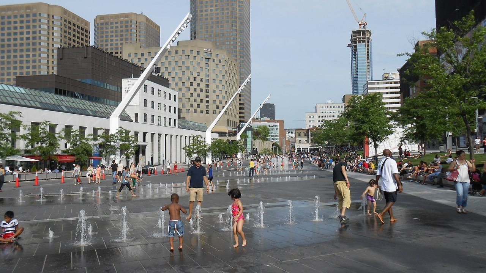

Race, Montreal Jazz Fest

Behind
Best +0:01
371W
Target 418 W-47 W
- Cadence
- 87rpm
- Heart
- 140bpm
- Speed
- 26.5km/h
Recover10 of 26
0:10
Next: · 0:45 at level 22
+0.0%
7 m climbed
3.31 km
10
Resistance / 32
Solo races your best-time ghost: position reads Ahead or Behind, and solo alone gets a Pause button. Frozen at 7:35.